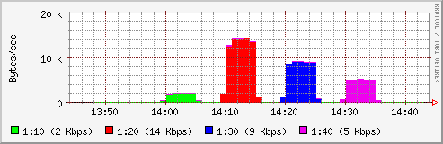
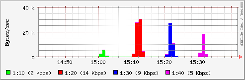
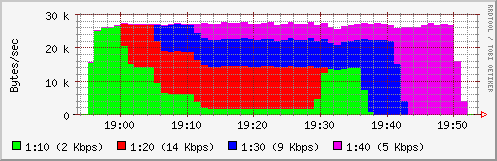
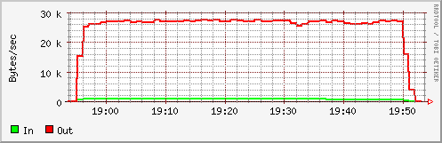

Esperienza su Quality of Service: Traffic Shaping |
|
|
|
Per la realizzazione di questo modulo useremo
Netkit4TIC
con la
connettività
con la rete reale (leggere il file README).
Riportiamo la mappa
(pdf,
xml)
della rete dell'esperienza che risulta da una semplificazione
di quella proposta nell'esperienza del firewall con area DMZ.
Il nodo rrd è quello che raccoglie le
statistiche. Il nodo fw è il firewall
dove configuriamo le nostre politiche di traffico. Per finire
usiamo un nodo interno ed un nodo esterno per generare
del traffico tra loro e verificare la correttezza delle
configurazioni.
Per Traffic Shaping si indicano svariate tecniche per assegnare priorità diverse al traffico dati di una rete. Penso che tutti gli utenti Internet abbiano potuto sperimentare, in un alcuni momenti, una eccessiva latenza della rete specialmente evidenziata quando in parallelo ad una sessione interattiva si sta effettuando un download. Questa latenza è dovuta al fatto che le due tipologie di traffico del nostro esempio hanno uguale priorità.
L'elenco dei pacchetti da installare sul firewall LEAF/Bering uClibc è:
qos-htb.lrp e tc.lrp. Il kernel del
firewall nel caso si carichi dinamicamente i moduli ha bisogno
dei moduli netfilter di tipo cls_*
e sch_*. Nel caso di kernel monolitico, come
quello a disposizione nel laboratorio virtuale, occorre
costruirlo con gli switch CONFIG_NET_SCH_* e
CONFIG_NET_CLS_* uguali a Y (non spaventatevi!
è già fatto).
Il file con l'esperienza QoS deve essere decompresso su una sottodirectory della HOME. In seguito, dopo aver seguito le istruzioni presenti nel file README occorre lanciare lo script:
realHost$ lstart
che ci costruisce tutta le rete (screenshot) . L'esperienza si divide nei seguenti punti:
Configurazione della fasce di traffico |
|
Per prima cosa ricordiamo che il traffico in arrivo, nel momento in cui è arrivato sull'interfaccia, ha già occupato una parte della banda trasmissiva e quindi non è possibile operare un suo ulteriore accodamento.
Il kernel di Linux offre una ampia scelta di funzioni per il controllo del traffico e quì non vogliamo farne una panoramica. Comunque tutte le strategie si basano su tre concetti fondamentali:
Per il nostro test vogliano definire quattro tipologie di traffico e abbiamo supposto di avere una linea con 30Kbps (per non sovraccaricare il nostro laboratorio virtuale) suddivisa secondo il seguente diagramma:
eth0 (30 Kbps)--+--- ( 2 Kbps) coda con bassa latenza (interattivo)
|
+--- (14 Kbps) coda massimo throughput
|
+--- ( 9 Kbps) coda per traffico web
|
+--- ( 5 Kbps) default
Nel nodo firewall questo viene configurato nel file
/sbin/htb.sysconfig con una opportuna sintassi. Le
classi appena descritte possono rimanere confinate nel loro limite
massimo oppure, in mancanza di altro traffico, espandersi fino alla
capienza della classe padre eventualmente in modo proporzionale
rispetto ai contendenti. Nel nostro esempio, per controllare la
configurazione dopo lo startup possiamo dare il comando
di visualizzazione della configurazione delle classi.
Se si cambiano alcuni valori occorre ricordarsi di dare il comando di avviso cambio configurazione:
fw# /etc/init.d/htb.init recreate; \
/etc/init.d/htb.init reload
Configurazione per la visualizzazione delle statistiche del traffico |
|
Per la visualizzazione delle statistiche del traffico abbiamo usato
una combinazione di protocolli quali SNMP, SSH,
HTTP e un tool di rappresentazione grafica di nome
RRDs in ambiente PHP.
In seguito ci riferiremo al nodo fw come il nodo che
vogliamo monitorare e con rrd come il nodo che ha la
responsabilità di raccogliere, memorizzare e visualizzare
i dati.
Il nodo rrd ha il compito di interrogare il nodo fw
a intervalli regolari di tempo via SNMP e via SSH. I dati raccolti
verranno memorizzati in un database RRD. Occorre quindi configurare
un agent SNMP e un accesso SSH sul nodo fw:
snmpd.lrp, libsnmp.lrp
libm.lrp è possibile installare sul nodo un
agent SNMP. Il file di configurazione utilizzato è
/etc/snmp/snmpd.conf.ssh.lrp configuriamo
il nodo in modo tale che sia possibile accettare ed eseguire
comandi shell provenienti dal nodo rrd. Allo scopo
copiamo la chiave pubblica dell'utente root del nodo rrd
sul file /root/.ssh/authorized_keys2 del nodo
fw.
In seguito occorre definire il database RRD, gli script che raccolgono
i dati e le pagine php che li visualizzano. Sul nodo rrd
devono essere installati i pacchetti
libnet-snmp-perl, rrdtool,
php4-rrdtool e librrds-perl.
Verifica dei valori impostati |
|
Per prima cosa verifichiamo le quattro fasce di banda che abbiamo
costruito. Allo scopo usiamo iperf che useremo
tra i nodi dove vogliamo misurare la banda passante.
La parte server è in ascolto su una
determinata porta e la parte client si connette e manda
una certa quantità di KB o manda traffico per un certo numero
di secondi. Metteremo quindi in esecuzione dalla parte
esterna il server sulle porte 22 (scp), 20 (ftp), 80 (http) e
101 (altro):
fw# cp /sbin/htb.sysconfig-no-ceil /sbin/htb.sysconfig; \
/etc/init.d/htb.init recreate; \
/etc/init.d/htb.init reload
fw# tc class show dev eth0
class htb 1:10 parent 1:2 leaf 10: prio 3 rate 16Kbit ceil 16Kbit [...]
class htb 1:2 root rate 240Kbit ceil 240Kbit burst 2047b [...]
class htb 1:20 parent 1:2 leaf 20: prio 5 rate 112Kbit ceil 112Kbit [...]
class htb 1:30 parent 1:2 leaf 30: prio 4 rate 72Kbit ceil 72Kbit [...]
class htb 1:40 parent 1:2 leaf 40: prio 6 rate 40Kbit ceil 40Kbit [...]
aclntExt# (iperf -s -p 22 -w 8K -f K &); \
(iperf -s -p 20 -w 8K -f K &); \
(iperf -s -p 80 -w 8K -f K &); \
(iperf -s -p 101 -w 8K -f K &)
Ora attiviamo la parte client per un traffico di 5 minuti per tipologia e con altri 5 minuti di "silenzio" tra una tipologia e l'altra:
aclntInt# export IPERF=" -t 300"; \
at -f /usr/local/sbin/scp `date --date="+2 min" "+%H:%M"` ; \
at -f /usr/local/sbin/ftp `date --date="+12 min" "+%H:%M"` ; \
at -f /usr/local/sbin/http `date --date="+22 min" "+%H:%M"` ; \
at -f /usr/local/sbin/other `date --date="+32 min" "+%H:%M"`
aclntInt# atq
dove i files di comandi sono rispettivamente:
# /usr/local/sbin/scp iperf -c 80.204.240.254 -w 8K -f K $IPERF -p 22 > /dev/null # /usr/local/sbin/ftp iperf -c 80.204.240.254 -w 8K -f K $IPERF -p 20 > /dev/null # /usr/local/sbin/http iperf -c 80.204.240.254 -w 8K -f K $IPERF -p 80 > /dev/null # /usr/local/sbin/other iperf -c 80.204.240.254 -w 8K -f K $IPERF -p 101 > /dev/null
Al termine del trasferimento, circa dopo 30 minuti, dal lato server potremo vedere sommarizzato il risultato:
Interval Transfer Bandwidth 0.0-308.9 sec 472 KBytes 1.53 KBytes/sec 0.0-301.7 sec 3568 KBytes 11.8 KBytes/sec 0.0-301.9 sec 2232 KBytes 7.39 KBytes/sec 0.0-301.9 sec 1272 KBytes 4.21 KBytes/sec
Per consultare i grafici con le statistiche del traffico in ingresso e uscita per l'interfacca eth0 basta usare un browser:
realHost$ mozilla-firefox http://192.168.77.2/ac.php
Il grafico del traffico di rete è:

Confinamento della banda con borrowing |
|
Ora configuriamo con CEIL uguale a RATE
fw# cp /sbin/htb.sysconfig-with-ceil /sbin/htb.sysconfig; \
/etc/init.d/htb.init recreate; \
/etc/init.d/htb.init reload
fw# tc class show dev eth0
class htb 1:10 parent 1:2 leaf 10: prio 3 rate 16Kbit ceil 240Kbit [...]
class htb 1:2 root rate 240Kbit ceil 240Kbit burst 2047b [...]
class htb 1:20 parent 1:2 leaf 20: prio 5 rate 112Kbit ceil 240Kbit [...]
class htb 1:30 parent 1:2 leaf 30: prio 4 rate 72Kbit ceil 240Kbit [...]
class htb 1:40 parent 1:2 leaf 40: prio 6 rate 40Kbit ceil 240Kbit [...]
e trasferiamo la stessa quantità di Kbyte:
aclntInt# export IPERF=" -n 472K"; \
at -f /usr/local/sbin/scp `date --date="+2 min" "+%H:%M"` ; \
export IPERF=" -n 3568K"; \
at -f /usr/local/sbin/ftp `date --date="+12 min" "+%H:%M"` ; \
export IPERF=" -n 2232K"; \
at -f /usr/local/sbin/http `date --date="+22 min" "+%H:%M"` ; \
export IPERF=" -n 1272K"; \
at -f /usr/local/sbin/other `date --date="+32 min" "+%H:%M"`
Al termine del trasferimento, circa dopo 30 minuti, dal lato server potremo vedere sommarizzato il risultato:
Interval Transfer Bandwidth 0.0-19.1 sec 472 KBytes 24.8 KBytes/sec 0.0-139.5 sec 3568 KBytes 25.6 KBytes/sec 0.0-85.7 sec 2232 KBytes 26.0 KBytes/sec 0.0-48.9 sec 1272 KBytes 26.0 KBytes/sec
Il grafico del traffico di rete è:

Ora facciamo una prova con un trasferimento di 20 Mbytes per entrambe le quattro fasce di traffico. Vengono iniziate ogni 5 minuti:
aclntInt# export IPERF=" -n 20M"; \ at -f /usr/local/sbin/scp `date --date="+5 min" "+%H:%M"` ; \ at -f /usr/local/sbin/ftp `date --date="+10 min" "+%H:%M"` ; \ at -f /usr/local/sbin/http `date --date="+15 min" "+%H:%M"` ; \ at -f /usr/local/sbin/other `date --date="+20 min" "+%H:%M"`
I tempi di trasferimenti sono risultati i seguenti:
Interval Transfer Bandwidth 0.0-1760.9 sec 20480 KBytes 11.6 KBytes/sec 0.0-2466.8 sec 20480 KBytes 8.30 KBytes/sec 0.0-2184.6 sec 20480 KBytes 9.37 KBytes/sec 0.0-2350.8 sec 20480 KBytes 8.71 KBytes/sec
Il grafico è autoesplicativo (ricordo che la classe 1:10 ha priorità 3, la classe 1:20 ha priorità 5, la classe 1:30 ha priorità 4 e la classe 1:40 ha priorità 6) si può consultare da browser:
realHost$ mozilla-firefox http://192.168.77.2/ac.php
 
|
|


 Sandro Doro (email me)
Sandro Doro (email me){kind=link}